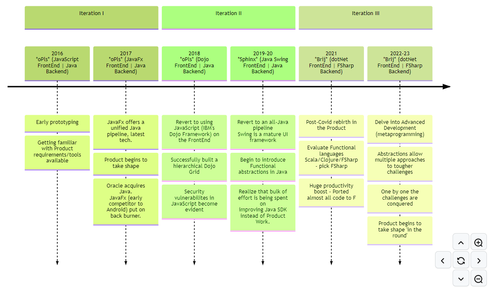
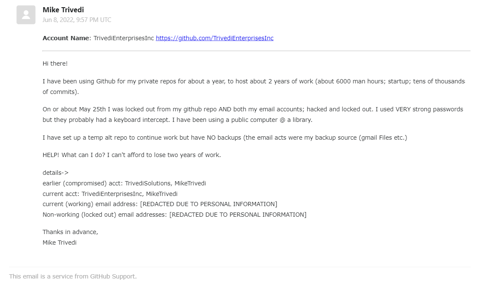
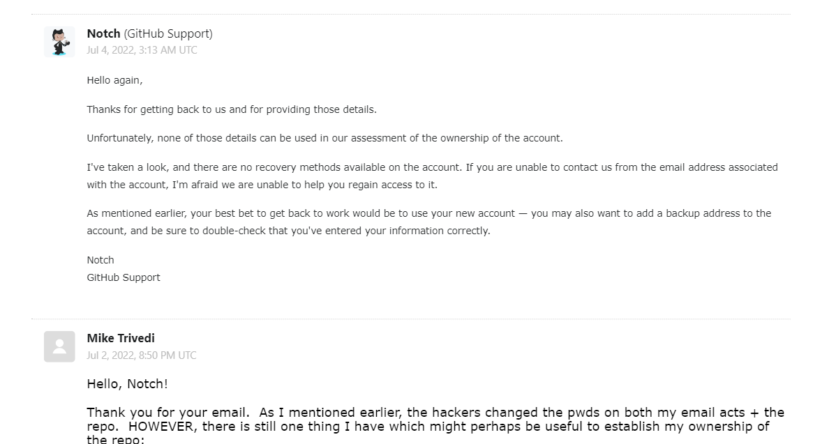

Product: TimeLine/Status
The Skinny
- 'Brij` is 80% complete.
- We have put in over 6 years in sweat equity in the product since 2016.
- Most major functionality is in place and tested.
- We have run out of working capital.
- No further work can be done without a secure environment
- Currently we are on the third iteration of the product. We achieved a minimum viable product somewhere in 2021, but felt that the market needed/deserved a much fuller set of features. The current version of
Brijhas a complete feature-set.
The Details
Status by Major Areas of Functionality
Brij has three major areas of functionality. These are their status:
- Table Definition Documents These allow the creation/update of Database Schema. 90% complete, all major functionality in place and tested
- Form Definition Documents These allow the creation/update of Database Forms. 80% complete, all major functionality in place and tested for two columns (need to be extended to variable columns) Need UI cell-manipulation code.
- View Definition Documents These allow the creation/update of Database Queries. 80% complete, all major functionality in place and tested
Expected difficulties in meeting Product Deadlines?
None. All new work remaining is either:
Completion tasksModifying/fixing existing functionality, orNew tasksMost of these are concern type of functionality which has been already implemented somewhere else in the product; so no expected gotchas remain. A good example of these tasks would be adding Module functionality (Impl3 tasks). The Core Module is already in place (and tested), and these tasks are variations on the theme, so the chance of encountering unexpected challenges here is slim.
Also, the Project Plan is based on a five-day workweek. Since 2016 I have been working startup hours (about 10 hr workdays, full Saturdays plus some Sundays).
Best case scenario?
Complete in one year.
Security Issues
Since the very incept in 2016, Brij development work has been under heavy attack: we have been using public PCs/networks and hackers have been trying to steal our code.
Over the years they have used a combination of Injection attacks (Unfortunately Java's openness also makes it very hackable) and Reflection compromises coupled with access to the System Clipboard and Keyboard intercepts.
By 2018 we developed a custom barebones, unhackable IDE to circumvent these attacks.
Unfortunately, every time the hackers were thwarted they became frustrated and increasingly vindictive.
Earlier they seemed to think they could use the stolen code but we began to learn how to give them less to steal.
This led them to delete our work (sometimes twice a day) or replace/corrupt our code files.
Move to F#
For a few months after we ported the product to F#, the hacking decreased substantially - perhaps the miscreants were again out of their depth.
Then in July 2022, in a fit of frustrated rage; they compromised all three of our email accounts (very strong passwords) plus our enterprise GitHub repository (please see email snapshots below).
Email & GitHub accounts hacked


This behavior continues till date. Over the years they get increasingly less utility from the stolen code (we keep taking precautions), but unfortunately they still find it worth their time to continue with the hacks.
We have used various code obfuscation techniques, multiple versions of compiled assemblies etc. to continue working on Brij, but today we strongly feel that any further open/insecure work would be an unreasonable risk to take.
Security needs to continue work on Brij
Give the above history, we think these would be reasonable precautions:
- Legal: Copyright & IP protection
- Physical: Office premises with Biometric access or Badges
- Technical: A VPN and an offline development PC
Ran out of capital, huh?
Unfortunately, yes. Was very determined to be self-funded (so as to keep all IP to myself).